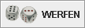

Die Werkzeugleiste befindet sich unterhalb der Menüzeile, ist aber frei beweglich und kann mit der Maus bewegt werden, indem man die "Grifffläche" an der linken Seite bei gedrückter Maustaste bewegt. Die Leiste kann als eigenes Fenster angezeigt werden oder "angedockt" an das Hauptfenster, links, rechts, oben oder unten (empfohlen ist oben).
Jedem Schalter ist eine Aktion im Spiel zugeordnet. Ist diese Aktion im Moment nicht verfügbar, so wird der Schalter grau gefärbt und kann nicht gedrückt werden.
Die Tasten starten im einzelnen folgende Aktionen:
| Taste | Aktion |
|---|---|
| Startet ein neues Spiel. Es erscheint der Dialog für ein neues Spiel. Sollte gerade bereits ein Spiel laufen, so wird in einem kleinen Dialog gefragt, ob das laufende Spiel abgebrochen werden soll, damit das neue beginnen kann. | |
| Während eines Spieles kann hiermit die aktuelle Stellung gespeichert werden. Es öffnet sich der Speicherdialog, mit dem eine Datei geschrieben werden kann, die den momentanen Spielzustand beschreibt. Damit kann zu einem späteren Zeitpunkt genau an der Stelle weitergespielt werden, an der man gespeichert hat. | |
| Während des Spiels öffnet sich bei Betätigung das Verlaufsfenster, mit dem das Spiel analysiert werden kann | |
| Mit dieser Taste kann das Spielbrett um 180° gedreht werden. | |
| Mit dieser Taste kann das Spielbrett an der Schranke gespiegelt werden. Es werden "rechts" und "links" vertauscht; "oben" und "unten" bleiben aber gleich. | |
| Tausche die Farben der Steine der beiden Spieler. Entsprechend werden danach auch die Meldungen anders lauten. | |
| Während eines Spiels über das Netzwerk lässt sich mit diesem Schalter der Chat-Dialog öffnen | |
| Für den Fall, dass man ein Spiel aufgeben möchte, weil man meint, es nicht mehr zu gewinnen, kann man hier ein Angebot zur Aufgabe machen. Es erscheint ein Dialog, in dem man auswählt, für welche Gewinnstufe man aufgeben möchte. Der Gegner kann das Angebot akzeptieren oder ablehnen | |
| Wenn man bereits einen oder mehr Steine bewegt hat, so kann man diese Züge rückgängig machen. Sobald jedoch der Gegner geworfen/gedoppelt hat, ist dies nicht mehr möglich. | |
| Wenn man denkt, dass eine Stellung außerordentlich günstig für sich ist, dann kann man den Spielwert verdoppeln (vgl. Regeln). Der Gegner kann entweder annehmen oder ablehnen. | |
|  Du bist dran: Wirf die Würfel. | |